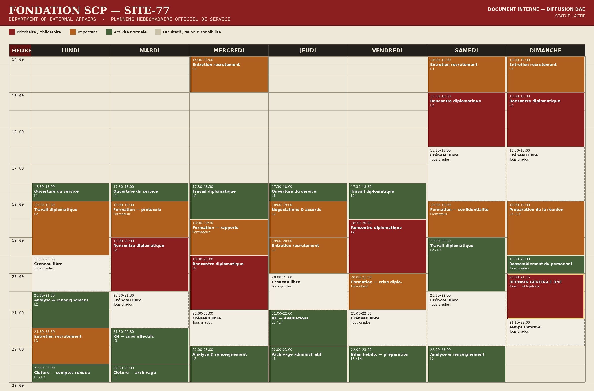

Planning hebdomadaire officiel de service
Statut : Actif
Service hebdomadaire
Planning du DAE
Planning hebdomadaire officiel de service du Département des Affaires Externes. Ce document est consultable en ligne uniquement.
Prioritaire / obligatoire
Important
Activité normale
Facultatif / selon disponibilité
